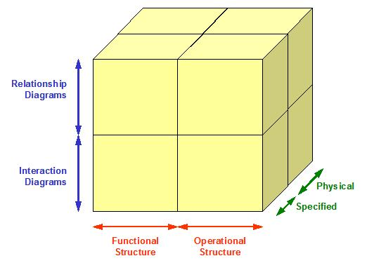

| Artifact: Component Business Model (Architecture View)
(ARC 402)
|
|
 |
| The architecture view of a component business model defines and documents the functional and operational structures of a business from a viewpoint suitable for those who require a detailed insight into the responsibilities, relationships and interactions between the model’s business components. |
Domains: Functional
Work Product Kinds: Model |
|
Purpose
The architectural view of a CBM is intended to ensure that a CBM is structurally robust and viable for implementation
in the real world It is recognized that many may more easily understand a CBM via CBM/S maps. These, however, do not of
themselves provide any indication of modeling “goodness”.. For example, CBM/A models are more suited than CBM/S maps
for verifying that the business model exhibits sound design principles, such as “loose coupling”, “high cohesion” and
“encapsulation”, and are therefore more likely to provide appropriate component definitions that can be used, to some
degree, in isolation of the main model.
Using component oriented viewpoints to model a business can have a number of advantages These advantages are shared by
other component oriented modeling techniques, such as those used in IT systems design:
-
The functional and operational viewpoints of a CBM facilitate the separation of its functional purpose from the way
it is organized and deployed (its operational considerations). Thus a CBM can offer a “politically neutral”
representation of an enterprise, more easily facilitating corporate agreement on the nature and purpose of the
business as well as separately enabling the “political” debate on how to organize and deploy.
-
Component models provide a single, cohesive representation of a system (such as a business), in which all aspects
of the system can be considered together in a single model, thereby enabling a clear single point of view on what
the business “is”. Other business modeling techniques (loosely termed “traditional” approaches) exploit separate
models of the business’s activities, enterprise information, business roles, locations and other resources, thereby
requiring separate joining mechanisms (such as matrices and tables) before a cohesive point of view can be
established.
Component Business Models may:
-
Define a particular business, designed to meet a specific set of functional and non-functional
requirements that satisfy the strategic needs of one enterprise As may be created within a particular client
engagement, when the resulting CBM is specific to the client.
In this case, and only when fully developed, the specified view presents a specification of the functional and
non-functional characteristics for all components within some bounded scope (such as may be described as a
“commercial eco system”), while the physical view provides a fully detailed description of how each component will
be implemented – such as “in house” or “outsourced”, and therefore suitable for use as a blueprint for the
acquisition and/or operation of the business.
In this case, both specification and physical levels are usually incomplete in some well-understood way - requiring
tailoring and (potentially) integration with other partial CBM/A’s before being completed (elaborated) in order to
satisfy a particular requirement. The scope of such a generalized CBM/A may be enterprise wide, focused on a
particular type of business problem, or simply a collection of “standard business components” that are known to
work well together.
For a particular business, the extra detail and information contained within CBM/A models can be used:
-
As reliable input to the development of viable business strategies and the identification and prioritization of
change programs – the extra rigor of a CBM/A model can be used to ensure the development of robust CBM/S maps, and
subsequently the accurate “hot spotting” or “heat-mapping” of the map’s components.
-
As a detailed technical specification of a business, against which strategists and architects can evaluate
alternative implementation approaches and to which 3rd parties can submit business propositions and tenders.
-
To compare and identify appropriate implementation strategies for components, such as “in house” v “outsource”, and
to generally be a blueprint for the acquisition and operation of the associated business services.
-
To contribute to estimates of the cost of change programs, whether for budgetary (project prioritization) or for
detailed planning purposes (project business case development).
-
To guide the business’s IT and Enterprise Architects in their development of the broader business architecture A
Business Architecture contains more than just the architecture view of CBM. Practioners can get additional
information in the education referenced in this document., as well as the underlying Information Systems and
Technology Architectures.
-
As a way of guiding the division of large change programs into smaller projects, so that each part can be worked on
in relative isolation – for which the assured “high cohesion” and “loose coupling” of the CBM/A’s components can
help ensure the interactions between the semi-autonomous projects are kept to a minimum.
As Patterns, generalized but none the less detailed CBM/A models may be developed:
-
To provide a “quick start” to specific client engagements, which can select, customize and integrate pre-developed,
partial CBM/A models – down to individual components. Reference Architecture oriented CBM/A models can save time,
reduce required engagement resources and reduce overall risk.
-
To provide industry specific (rather than client specific) guidance needed to design, build and offer industry
solutions, whether these be business solutions (e.g. an out-tasked business service for the retail banking
industry) or Information Systems solutions (e.g. a CRM solution for the retail industry). It is unlikely that
Technology solutions (i.e. business independent IT) will be guided by business dependent CBM/A models.
|
Relationships
| Tasks | Input To:
| Output From:
|
Description
| Main Description | This artiact compliments the strategic view of a CBM (referred to here as CBM/Strategy, or CBM/S) which reflects a
viewpoint more suited to those using CBM to present a view of the business “on a page”, in which the model’s components are
classified by competency and accountability level visually laid out across a two dimensional framework - in
common parlance, the CBM/S presents the business via a component map. The components are, however the same
components whether presented via CBM/S or CBM/A – they are part of one model, looked at from two viewpoints.
Defining and documenting the structure of a business through the viewpoints based on business components has many
advantages. It is often also helpful, however, to define and document a business from other viewpoints, such as those
associated with business activities, enterprise information and/or business roles.
Depending on requirements, the architecture view of a CBM can include all or some of:
-
Detailed descriptions of each component, including a specification of the services it offers and/or
requests, together with a definition of the internal capabilities and functional resources it needs
in order to support its offered or requested services.
-
Functional relationship and interaction diagrams, documenting the way in which the business components work
together in order to support the needs of the business.
-
Operational relationship and interaction diagrams, documenting the manner in which the components (or, more
exactly, the resources of the components) are deployed over various operational resources, such as business
locations and business structures Each of which enjoy their own work product descriptions.
In all or any case, these views of the CBM/A may be presented in a:
-
Specified form of these descriptions and diagrams, in which the required characteristics and capabilities of
a CBM/A’s components and their relationships are documented. This view is particularly useful when using the CBM/A
to discuss and document various implementation options, such as when the sourcing of the included components has
not yet, or cannot be defined.
-
Physical form in which the selected implementations of the components and their resources are identified,
and the manner in which they will be realized is described. This view is useful when discussing and documenting
decisions on the manner in which the business will realize its components, such as when communicating the current
or future boundaries of the business – based on decisions to implement each component “in house” or via
a third party.
The development of a CBM/A can evolve (or elaborate) over time in any number of ways, depending on the development
techniques used and the nature of the engagement – such as “forward engineering” a preferred to be state, or “reverse
engineering” an understanding of a business’s present structure. Generally, whatever development techniques are
adopted, good practice suggests that all aspects of the CBM/A’s content, including the specified and physical views
will all be created and/or enhanced in parallel, with the development of each element (component description, diagram
and view) influenced by requirements or constraints implied by other elements.
Notes:
-
Throughout this document, the first reference to each modeling concept relevant to a Component Business Model
is in italics – all these terms are defined in the CBM/A metamodel and glossary document being written in Q207.
-
The notion of “functional” and “operational” structures is central to the architecture viewpoint of CBM,
helping to separate distinct concerns and supporting its interlock with the solution architecture domain. See
the Architecture Description Standard in References.
-
Each of which enjoy their own work product descriptions. See section 2.2 for a discussion when each viewpoint
may be appropriate, and section 5 for a discussion on how the development of these different views may be
inter-dependant.
|
| Notation |
A CBM/A model is documented in a standard manner, following the structure defined below[1]. Individual circumstances
will dictate the degree of completeness (including reasoned omission) of each part defined below. Note that many
elements included in a CBM/A are more fully defined in other work products, while being referenced and used in the
CBM/A model.
Introduction
The introduction should document the overall purpose and context of the CBM/A model, including freeform pictures as
necessary. This will include a description of:
-
The nature of the CBM/A model (such as whether it represents a view of a specific client’s business, or is a
generalized pattern),
-
Whether it is a specification of the business, with no (or limited) insights into implementation decisions, or
is intended to be a fully documented description of how the business intends to realize its functional
requirements.
-
Whether an operational perspective is included, documenting the manner in which the businesses components are
“spread out over” operational resources such as locations or Lines of Business.
-
Its scope (e.g. does it represent a business ecosystem, is bounded by the enterprise’s own commercial
boundaries, or is it some coherent aspect of the business, being thought of as a virtual enterprise in its own
right, such as the business of IT or the business of R&D?).
-
The depth of detail (such as the inclusion or not of components’ non-functional characteristics).
Also, statements are expected on
-
Its degree of completeness or confidence (for example, are there areas of the model which are yet to be
developed or may be subject to revision as new information becomes available?).
-
An outline and explanation of the remainder of the work product.
Model Context
A description of the broad business context within which the enterprise/eco-system and therefore the CBM/A model
resides. The context is normally considered as a “black box” and showing the enterprises relationships with external
actors (such as competitors, suppliers, customers, regulators)[2].
Component Map
A picture, plus any necessary descriptive text, that shows the components in the CBM/A model in some simple manner,
setting the scene for the detailed CBM/A views. It may be appropriate to use a CBM/S component map, illustrating all
components within a competency (such as “buy”, “make”, “sell”) and accountability (“direct”, “manage”,
“execute”) framework.
Detailed CBM/A views (specified and physical)
The following sections should be repeated for both the specified and physical views (whether partial or complete) of
the CBM/A model. Decisions on which view(s) to include will be based on many factors, such as:
-
Audience (e.g. CxOs, Business Executives, IT Architects, Program Managers)
-
Purpose (is the model to be fully specified and configured or is it a generalized reference pattern?)
-
Completeness (is it being developed early in a project’s life, or is it a finished work product?)
When appropriate,
-
the specified view of the CBM/A should include a specification of the components’ non-functional
requirements (NFRs), as well as their functional requirements,
-
the physical view should describe the implementation of the specified functional and operational views,
documenting how the business will achieve the functional and non-functional requirements: for example:
-
by determining whether a component will be implemented “in house” or “out sourced”,
-
by deciding whether an operational resource will be “bought” or “leased”.
Component Descriptions
Component descriptions may be presented in textural, tabular or diagrammatic formats. They should include some or all
of the following (Those starred (*) would be expected at the strategic level):
-
Component name (*)
-
Component competency and accountability level (*)
-
Component purpose or purposes (*)
-
Component capabilities, including descriptions of how capabilities combine to support the offered services, or
exploit requested services
-
Functional resources the component is responsible for, including descriptions of how functional resources are
used by the component’s capabilities. Functional resources maybe classified (such as “activity”, “information”,
“skill”), depending on the model’s purpose.
-
For each service offered or requested:
-
-
Service name
-
Service description
Note that it may be desirable for the services offered or requested by a component to be separately documented,
possibly in a distinct work product such as a Goal Service Model. A “component to service” matrix may also be useful,
documenting which components offer or request which services.
Operational Resources
Structured descriptions of the operational resources over which the components are to be deployed are also
required. Operational Resources maybe classified (such as “locations” or “business structure”), depending on the
model’s purpose.
While any functional resource is “contained” or “owned” by a specific component (and can therefore be directly
associated with one and only one component, as described in section 3.4.1), operational resources are “shared” by
components – components are “deployed into” operational resources.
The functional aspect of the CBM/A
Documenting the structure of the business’s components, in terms of the components’ relationships and how they combine
to support the function of the business. It is normal to use diagrams (with formal or informal notation), supported as
necessary by descriptive text:
-
One or more relationship diagrams plus supporting text, documenting the static relationships between the
CBM/A’s components, as well as with actors external to the CBM/A
-
One or more interaction diagrams plus supporting text, describing how the components in the CBM/A
interact in order to support the businesses function (such as a business process).
Depending on requirements, the functional aspect of the CBM/A should be separately presented in both specified and
physical terms with, for example, the specified view documenting the specification of a component’s resources, such as
a skill or role; while the physical view defines their implementation; such as in an employee, contractor or third
party, and whether the role is one of several expected of that person.
The operational aspect of the CBM/A
Documenting the deployment of the business’s components across the operational resources, such as into a business
organization (i.e. across business units) or across a geographic landscape (locations). It is normal to use diagrams
(with formal or informal notation), supported as necessary by descriptive text:
-
One or more relationship diagrams plus supporting text, documenting the manner in which the components’
functional resources are to be deployed (distributed) across the business’s operational resources, including
links to external actors[3].
-
One or more walkthrough diagrams plus supporting text, describing how the deployed functional resources
communicate across the operational resources in order to support a business process as triggered by external or
internal actors.
Depending on requirements, the operational aspect of the CBM/A should be separately presented in both specified and
physical terms with, for example, the specified view documenting the distribution of components’ specified resources across
specified locations (“CSR in call centre”) and the physical view defining how this will be realized (“employee or
contractor in in-house call centre”, or “partner’s employee in partner call centre”).
[1] It is unlikely that the CBM/A model will be developed in this sequence – for example, the context-setting
map included in the introduction, cannot be completed until the model is finished and the component boundaries
confirmed.
[2] Although generally used to represent an IT System, WPD APP011, “System Context” may be used to show the
enterprise as a black box. If it is useful to present additional context on the enterprise’s internals, other WPs,
such as ARC 101 “Architecture Overview Diagram” or BUS416, “Capability Model Definition”.
[3] within external operational resources
|
Key Considerations
Functional Structure
It is generally accepted that a “good” functional structure for a CBM model (as illuminated in the CBM/A’s component
descriptions and interaction diagrams) exhibits three characteristics[1]:
-
High Cohesion, in which the resources “owned” by a component demonstrate a high degree of commonality
and inter-dependence. For example, the skills resources could be closely associated with a recognized
professional discipline (actuaries), requiring significant and intimate access to related business
information (risk tables), using highly specialized activities (risk/reward
calculations)
-
Loose coupling and other structural forms such as strict layering, in which components need limited
interactions (which do not rely on “implied knowledge”) and have minimal interdependencies as they work
together to satisfy the needs of the enterprise, while reducing the risk that changes within one component will
create unanticipated changes in other components – for example, automating the risk/reward calculation
does not alter the manner in which the services of the actuarial component are used by the policy underwriting
component.
-
Encapsulation, in which the resources of a component are private to that component, and are not exposed
for direct access by resources in other components – in other words, components cooperate and work together via
the execution of their services (such as “offer quote”), supported by their internal
capabilities (“quote construction”) orchestrating the use of their resources (skilled
underwriters using quote calculation activities on insurance product
information).
Operational Structure
It is highly unlikely that the operational structures of an enterprise will realize one component in one place or one
line of business. Rather, it is normal to find components replicated and/or spread out over operational resources such
as locations and organizational units. For example, when taken as a whole:
-
Separate instantiations of an actuarial component may appear in separate business units, such as may
exist in different markets (life assurance v car insurance) or legislatures (US v UK legal systems)
-
Replicated implementation of the actuarial component across multiple sites, such as may exist in major
cities within a country
-
Different implementations of the actuarial component may exist in different sites, such as may exist in
head office (where it services call upon human resources) compared to the standalone services available on a
salesman’s laptop (where it will be restricted to automated services)
It may also be that the resources within a business component may need to be spread out over operational resources, for
example:
In this later case, where a component’s resources are spread out over operational resources, it will be necessary to
carefully consider the advantages and disadvantages of “short cutting” access to one component’s resources by another,
simply because of some form of co-location: while such decisions can have major advantages in the short term (“people
will do what people want to do”), permitting or even designing in such opportunities may lead to longer term challenges
when there is a need to alter a business process or divest a business function: doing away with encapsulation can lead
to high coupling and low cohesion.
Viewpoints on the CBM/A model
The CBM/A can be a large and complex work product. It is therefore important to understand how it may be best developed
and presented, depending on the particular project circumstances. This section provides some advice and guidance on the
different reasons and ways of presenting a CBM/A. In order to reduce the complexity of the development process,
the development of the CBM/A could take advantage of a set of well-defined viewpoints [2].

Figure 2
These viewpoints are mutually independent – that is, it is helpful to position any aspect of the development of a CBM/A
with respect to all three:
-
Are we working with the functional structure, identifying and documenting the enterprise’s components,
or are we considering the manner in which the functional resources of these components are spread out over the
operational structure?
-
Are we concerned with the specification of the business’s structure, or are we documenting the manner in
which it will be realized in the physical world (whether “by component”, or “by location”)
-
Are we looking at the static relationships between the components and/or their distribution, or are we
exploring the manner in which the components interact and co-operate to deliver value to the business?
While it is possible to mix viewpoints on any one dimension, it is generally easier to “keep your thinking straight” if
only one aspect from each dimension is in focus. As well as supporting the development process, these viewpoints
can also be used:
-
To facilitate communication and understanding of a particular CBM/A with various audiences. For example:
-
The specified functional views can be used to assist an enterprise’s executive understand how their business
should be structured, without political or organisational ambiguities or distractions
-
The physical functional views can help an enteprise define it’s “borders” within a broader eco-system, deciding
which bits it wants to operate itself, which bits to outsource or partner, and which bits it needs to buy in,
so that it’s most able to realise it value propositons to the marketplace.
-
The operational views can be used to help an enterprise’s executive understand how to organise themselve
around, for example, “brand” based business units or geo-political boundaries; or how to optimise their use of
physical locations such as offices, stores, factories and warehouses.
Other Factors Affecting the Development of CBM/A Models
There are many factors that may determine the manner in which a consultant may choose (or be able to) develop a CBM/A
model – from any viewpoint, including:
Degree of completeness (elaboration)
The degree of completeness reached (or required) will influence the content in a CBM/A. This may be dependent on the:
-
Development or engagement process (waterfall, iterative, etc.). Each viewpoint of the model generally
elaborates through a number of versions towards completion, while remaining in sync. with all other views at
each project “milestone”.
-
Development technique. The relationship between the specification and physical views of the model is one of
transformation – they are different things. However, the direction of transformation (forward or reverse
engineering) will influence the degree of completeness at each project milestone.
Scope
As well as describing a complete enterprise, it is often helpful to develop CBM/A Models showing greater detail of
particular parts of the whole, particularly when a CBM/S map is available, which has been subjected to an analysis
identifying the enterprise’s “hot spots”. For example:
-
Those parts of the CBM/S which are to be considered for outsourcing or sale will need careful analysis to
ensure the affected components are loosely coupled to those remaining in house, with the services offered and
received carefully assessed, and the included resources fully understood.
Filtered Views
Any view of the CBM/A may be filtered for a particular specialist area, such as may be needed to understand how the
enterprise will cope with e.g.:
-
The needs of Legal or Regulatory Authorities
-
Fluctuations in demand for its products
-
The effect of competitors entering or leaving its markets
-
Etc.
Such filtering does not generally change the components or operational resources included in the model, rather it
simply allows a clearer focus on some sub-set of the model.
[1] Also well understood in the world of IT component modeling
[2] Commonly used in the world of IT architecture
|
Tailoring
| Impact of not having |
A CBM/A model provides a detailed description of a business’s (or broader business ecosystem’s) structure. Without it,
or something very similar, underpinning a CBM/S map, it is hard to see how the design of a business of any complexity
can be conceived and developed with confidence.
For example
-
For a strategy development project to use a CBM/S map with confidence, they must be sure that the map is a strong
representation of the target business – confidence that comes from the map being a view of the same model that has
a CBM/A viewpoint. Without a CBM/A view of the model, the probability that the components represented on the CBM/S
map are not “well formed” (e.g. do not represent sensible chunks of the business) could be significant.
-
For a CBM/S inspired change program to have confidence that its relationships and boundaries with the rest of the
business are well defined, as it effects a business change, it needs to be sure it is clear about the services it
offers, the services it needs, and the resources it is responsible for. These things will be defined in the views
of a CBM/A model.
|
| Reasons for not needing |
This work product may be unnecessary if
-
A corresponding CBM/S map is known to provide an accurate representation of the business, and the extra detail
associated with CBM/A components (such as resource allocations) are not needed.
-
An alternative approach to business architecture modeling has been adopted. For example, it may be appropriate to
look at a business from separate resource modeling viewpoints (such as “business activities”, “enterprise
information” and “business roles”), using separate business architecture work products to document these views,
such as a “Business Activity Model”, “Enterprise Information Model” or “Business Structure”.
It is important to recognize that alternative views should be considered complementary to, rather than alternatives
for, CBM/A:
-
When adopting separate resource oriented viewpoints, care must be exercised to ensure no knowledge is lost by not
also adopting the component viewpoint. The single, holistic view of the business provided by CBM/A could add extra
value over that of multiple independent views. For example, a component view may make it more straightforward
to ensure reasonable chunking of the business, avoiding the need for matrices and other techniques to ensure
sensible separation of resources into manageable parts.
-
When adopting a component based view, the association (clumping) of resources with components, which invariably
involves compromise and context sensitive decisions on resource allocations to components, can hide (or even lose)
information that remains available in an approach based on separate resource views. For example, the use of
an information resource by a number of activity resources is traditionally fully documented via activity-data
matrices, whereas in a component view it can be difficult to retain sight of these resource level relationships.
|
More Information
| Checklists |
|
| Guidelines |
|
| Supporting Materials |
|
| Estimation Considerations |
|
© Copyright IBM Corp. 1987, 2012 All Rights Reserved
Property of IBM
These materials are intended only for use as part of an IBM engagement |
|